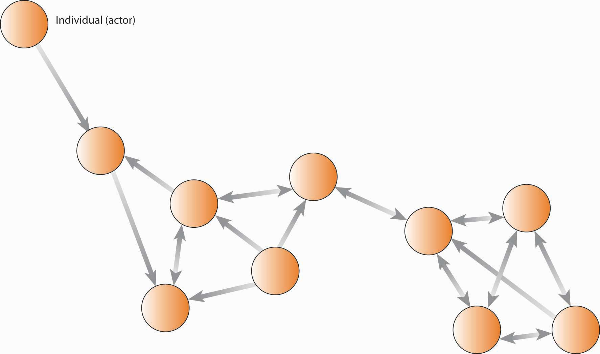

This section draws on extensive social network research to help you understand the managerial implications of that body of knowledge. Social networks often complement or compete with such aspects of organizations as formal organization structure (think “org chart”), work processes (think “job description”), human resource practices, leadership style, and organization culture. This is particularly problematic in knowledge-intensive settings where management is counting on collaboration among employees with different types of expertise. People rely heavily on their networks of relationships to find information and solve problems—one of the most consistent findings in the social science literature is that who you know often has a great deal to do with what you come to know.An excellent review of this literature is found in Kilduff, M., & Tsai, W. (2004). Social networks and organizations. Beverly Hills, CA; Sage. Yet both practical experience and scholarly research indicate significant difficulty in getting people with different expertise, backgrounds, and problem-solving styles to integrate their unique perspectives effectively.It is one problem to learn or act on knowledge with others who think like you (such as in a community of practice); however, it is an entirely different problem to do this in diverse social contexts, such as cross-functional teams, where people often do not share a common vision, language, metrics of performance, or even understanding of the problem. For example, sociologists have demonstrated how correct information can have little or no effect on critical decision processes. Vaughn, D. (1996). The Challenger launch decision: Risky technology, culture and deviance at NASA. Chicago: University of Chicago Press. Further, organizational theorists have shown that a person’s knowledge can be role constrained. March, J., & Olsen, J. (1975). The uncertainty of the past: Organizational learning under ambiguity. European Journal of Political Research, 3, 147–171. From a manager’s standpoint, simply moving boxes on an organizational chart is not sufficient to ensure effective collaboration among workers.
If you were asked for a definition of a social network, your intuition would probably provide you with a pretty close answer. A social networkA patterned set of relationships between two or more people. can be characterized as a patterned set of relationships between two or more people—or, as they are called in the social science literature, actorsThe individuals, groups, organizations, or supraorganizations that comprise the network.. It can be depicted in a sociogramA diagram of points and lines used to represent relations among network actors., as shown in the following figure. The term “actors” is broader, as it includes all possible types of information/knowledge processing entities: the individuals, groups, organizations, or supraorganizations that constitute the network.Granovetter, M. (1985). Economic action and social structure: The problem of embeddedness. American Journal of Sociology, 91, 481–510; Granovetter, M. (1995). Getting a job: A study of contacts and careers (2nd ed.). Chicago: University of Chicago Press. For instance, all of the people named in the figure are actors, but you could also consider each work group or department as an actor if you were concerned with the interaction among these groups rather than with the interaction within the groups or among individuals. The characteristics of a social network also are the determinants of social capitalThe resources available in and through personal and business networks., that is, the resources—such as ideas, information, money, trust—available in and through personal and business networks. You can have social capital, as can organizations. However, since social capital is based on relationships, no single person can claim ownership of it, but it is important and manageable.
Figure 9.4 Sociogram: A Simple Social Network
The mapping and measuring of relationships and flows among people, groups, organizations, computers, Web sites, and other actors is called social network analysisMapping and measuring of relationships and flows among network actors. (SNA), which we will discuss in greater detail later in the chapter. Each connection, or relationship, between actors is known as a network tieThe connection between actors., while each actor, or point on the network, is referred to as a nodeThe point, often another individual or actor, where two other actors are connected.. In the previous figure, Thomas is a node and his connections to Albert, Eric, Martha, and others are network ties. Direct tiesTies where a single link spans actors. are those in which a single link spans two actors; indirect tiesWhere connections exist between actors, but where the connection spans more than one link. are where connections exist between actors, but only through other actors (hence, indirect ties). You can see that Thomas has four direct ties and is indirectly tied to everyone in the network. Conceptually, you probably have indirect ties to everyone on the planet but that does not necessarily mean they come to mind as part of your social network.
Figure 9.5 Example of a Social Network Based on Information Ties

Figure 9.6

Actor Kevin Bacon founded sixdegrees.org to help charities network and share resources.
Network sizeThe number of actors in the network. would be the number of actors. Though you might be interested in the count of all network members, you also might want to know how many people are one, two, or three links away. Long before computer networking was invented, psychologists Jeffrey Travers and Stanley Milgram conducted a low-tech experiment that looked directly at this question.Travers, J., & Milgram, S. (1969). An experimental study in the small world problem. Sociometry, 32(4), 425–443. They asked how many links might be necessary to get an envelope from one randomly chosen person to another randomly chosen person in the United States. They found that, on average, there were six links—or “degrees of separation”—between any two people randomly drawn from the U.S. population (at the time) of 250 million. Flipping the numbers around, Travers and Milgram then estimated that each individual had a potential network of 3,000 to 10,000 people. You may be familiar with this larger body of work in terms of “how many degrees of separation are you from Kevin Bacon?” or the notion of the “six degrees of separation.”
The extent to which a given actor is in the middle of the network is referred to as centralityThe degree to which an actor has the most unique links to other actors in the network. (i.e., network centrality), though the definition of “middle” can vary from who has the most ties, to who is the unique connection between two other groups. Centrality is good because it puts the actor in a position to gather information, and to serve as broker between the parties that are connected via that actor.
Another basic network indicator is densityThe degree to which there are overlapping linkages among the actors in a network., which essentially reflects how many people in a network are connected (usually directly) to each other. You can imagine that there are a number of possible network configurations based simply on permutations of network size, centrality, and density. For instance, you can have a large or tiny network, be central or peripheral in the network, and have a dense or sprawling network. Each of these structures has implications for how the network might serve its various actors.
The tie between actors can be directional or bidirectional (i.e., reciprocal flows between actors); similarly, a network can be described as social, personal, professional, informational, and so on, depending on what is of most interest.
As a manager, you might be interested in your employees’ (1) communication network, (2) information network, (3) problem-solving network, (4) knowledge network, or (5) access network.These dimensions, and their specific definitions, are taken from Cross, R., Borgatti, S., & Parker, A. (2002). Making invisible work visible California Management Review, 44(2), 25–46. A communication networkThe informal structure of an organization as represented in ongoing patterns of interaction, either in general or with respect to a given issue. is the informal structure of an organization as represented in ongoing patterns of interaction, either in general or with respect to a given issue. For instance, people on the same office floor may periodically congregate in the break room or by the soda machine and engage in informal communication. For this reason, some descriptions of social networks focus on the informal network. That is, the pattern of interactions among employees that aren’t a direct consequence of the organization chart, job descriptions, and so on.
An information networkShows who goes to whom for advice on work-related matters. shows who goes to whom for advice on work-related matters. For example, if you have a question about filling out a form, or answering a customer’s question, who do you regularly seek out for answers? A problem-solving networkIndicates who goes to whom to engage in dialogue that helps people solve problems at work. indicates who goes to whom to engage in dialogue that helps people solve problems at work. For instance, “whenever this machine breaks down I know I can turn to Pat for help.” A knowledge networkCaptures who is aware of whose knowledge and expertise. captures who is aware of whose knowledge and skills, and an access networkShows who has access to whose knowledge and expertise. shows who has access to whose knowledge and expertise.
The example with Pat is also a knowledge network because it appears that you understand that Pat has the needed knowledge, and there is no barrier impeding your access to Pat. However, if the organization had rules telling you that you needed to talk to Pat’s boss before getting assistance from Pat, then the knowledge network and access network would look different. You can imagine that each of these types of networks might reveal a different structure, depending on the question—for example, the linkages would be different across iterations of the figure. You can see that information is flowing back and forth between different actors in the network. However, it does not appear that information is flowing directly between all network members—for instance, the sales and marketing, finance, and operations staff do not communicate directly with each other. However, if you were to combine the staff from those functions in the same office space, you would likely create a new communication network, which in turn could change the information ties of all the members.
More recent work in social network research has also considered the way that individuals interact, as well as their potential impact on network relationships.Bavelas, A. (1950). Communication patterns in task-oriented groups. Journal of Acoustical Society of America, 22, 725–730; Leavitt, H. (1951). Some effects of certain communication patterns on group performance. Journal of Abnormal and Social Psychology, 46, 38–50; Shaw, M. (1964). Communication networks. In L. Berkowitz (Ed.), Advances in experimental social psychology. New York: Academic Press. Five key dimensions of work quality can also be taken into account with social networks: (1) activity, (2) control, (3) access, (4) influence, and (5) power. ActivityGauges how active an actor is in a network. gauges how active a person is in the network. For example, an individual may be in the network, but actually do little to affect what is going on. ControlGauges how much control an actor has over the flow of information in a network. gauges how much control a person has over the flow of information. Centrality is obviously one indicator of control, but there may be other determinants of control such as intelligence, personality, or even a particular skill set. In highly technical fields, for example, one individual (a node) can make a big difference on information flow, even if he or she is situated in a fairly open and balanced network. AccessTells you how easily a person in the network can get the resources that he or she needs to be successful in the organization. tells you how easily a person in the network can get the resources that he or she needs to be successful in the organization. How many steps, for instance, are they away from those individuals or units that are most instrumental for their success? InfluenceA stakeholder’s relative power over and within an organization. and powerA stakeholder’s ability to get things done. are different but related characteristics. Influence shows how much potential influence a person wields in the network, while power tells you how able they are to get things done. You may be interested in other dimensions of work quality, so feel free to experiment with them in SNA.
Social networks are the invisible structure in organizations—they capture the actual pathways of how information flows and how work is done. Network size, centrality, and density were identified as key features of social networks, and you have a general understanding of at least five types of social networks: communication, information, problem solving, knowledge, and access.


{kind=link}